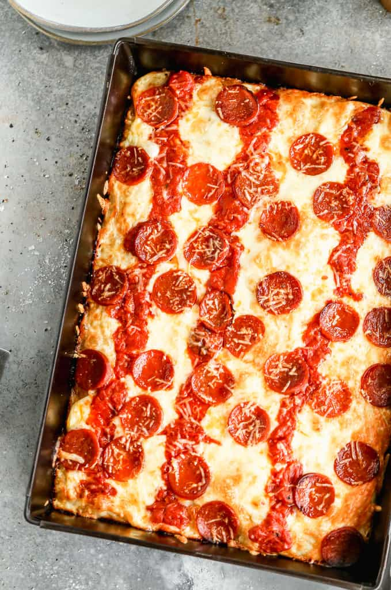

Porridge
Perfect porridge for a healthy way to start the day.

- 40g oats
- 200ml milk or water, or a mixture of the two
- 1 tablespoon of raw honey
- 1 handful of berries(blueberries, blackberries, raspberries)
- cinnamon powder
- Put the oats into a pot and add the milk
- Use medium heat and stir the the content
- After the mass reeaches the desired consistence, put it onto a plate
- Mix the honey under
- Sprinkle the cinnamon over the porridge
- Finally add the berries on top and voilà the enjoy your porridge.
Steak And Eggs
- 30 Grams Grass Feed Beef
- 2 Small Free Range Eggs
- 2 Garlic Gloves
Begin by slicing 30 grams of grass-beef filet in half. Don't remove any fat as this helps give the beef it's cooked texture. Next, thoroughly tenderize both slices with a small wooden tenderizer. Be sure to use greaseproof paper! Prepare a pan with a table-spoon of olive-oil. Add black pepper to the oil and heat the pan to 150 degrees celsius. Now carefully place the beef into the pan-adding sea-salt while turning the beef every 30 seconds for 2 minutes. Remove the beef and place each filet on it's own plate. Leave the pan at 150 degrees celsius. Now crush 2 cloves of garlic and sprinkle generously over the beef. Crack 2 eggs into the pan. They will be infused with the juices of the filets. Pour 1/2 a glass of water into the pan and place a lid on the pan for approximately 45 seconds. remove the cooked eggs and place each one on a beef slice. And there you have it! Perfect steak and eggs every time!
Detroit-Style Pizza
Everything you need to know to make an amazing Detroit-Style Pizza in your own oven! This delicious pan pizza is hugely popular for a reason, and this homemade version will have you feeling like a pro! It’s baked to perfection with a chewy, bubbly crust and crisp cheesy edges. A true Detroit style pizza is baked in a seasoned steel pan. This is my kids absolute favorite pizza and it’s impossible to stop after just one slice.
Ingredients for one pizza
Dough:
- 236.59 g lukewarm water
- 1.5 g instant yeast
- 312.5 g bread flour
- 5.5 g ground sea salt
Pizza Sauce:
- 3/4 cup Pizza Sauce
- 282.5 g shredded low moisture mozzarella cheese , or 8oz Brick cheese/Wisconsin cheese, diced
- 85.05 g natural casing Pepperoni , thinly sliced
- 25 g freshly shredded parmesan cheese
Instructions
- Make dough: Stir all ingredients together in a bowl or stand mixer. Knead for several minutes, until the dough is smooth and elastic.
- First rise: Place in a well-greased bowl, turning once in the bowl to coat in oil, then cover and allow to rise for 2 hours. (Don't skimp on the rise times!)
- Press into pan: Oil the bottom and sides of a pizza pan*. Stretch dough into a rectangle and lay into pan(s). Cover and rest for 15 minutes, to allow the gluten to relax. Without handling the dough too much, gently spread the dough all the way to the edges of the pan, poking it into the corners, in a flat even layer (there’s no “crust” edge in Detroit pizza).
- Second rise: Rise again for 2 hours, or until the dough has risen about ⅓ way up the pan.
- Preheat oven to 450 degrees F. I recommend baking the pizza on a pizza stone, or if you don't have a pizza stone, use a baking sheet, and allow it to preheat in the oven.
- Add cheese: sprinkle cheese all over the dough, making sure it covers all the way to the edges.
- Add sauce: spoon pizza sauce into 2-3 lines/stripes going down the pan, over cheese—you don’t want to cover all the cheese in sauce.
- Add pepperoni, laying it in a single layer over the top. Lightly sprinkle parmesan on top.
- Bake for 15-20 minutes, or until cheese is golden and bubbly. Cool for a few minutes in the pan before slicing into squares.
Nutrition
| Calories: 214kcal | Carbohydrates: 21g | Protein: 11g | Fat: 10g |
| Saturated Fat: 5g | Polyunsaturated Fat: 1g | Monounsaturated Fat: 3g | Trans Fat: 1g |
| Cholesterol: 27mg | Sodium: 563mg | Potassium: 117mg | Fiber: 1g |
| Sugar: 1g | Vitamin A: 243IU | Vitamin C: 1mg | Calcium: 145mg |
| Iron: 1mg |